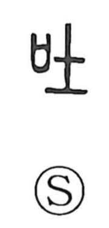

吐

Uncategorized
Kun: haku | On: to
to vomit ・ to spit ・ to spew ・ to expel
Explanation
A picto-phonetic character: a mouth (口) paired with the phonetic 土, which supplies the on reading to and guides the sense. The Shuowen glosses it as sosogu, to pour, and the graph came to denote what is poured out from the mouth—spewing, vomiting, spitting. By extension it also means to bring out, let out, or throw away. Shirakawa further sees it as echoing an onomatopoetic impression of hakidasu, the sound and act of retching and expelling.